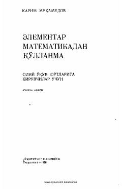

EMOliy oʻquv yurtlariga kiruvchilar uchun elementar matematika fanidan nazariy va amaliy qoʻllanma.
Ushbu qoʻllanma oliy oʻquv yurtlariga kiruvchilar va elementar matematika fanini mustaqil oʻrganuvchilar uchun moʻljallangan. Kitobda arifmetika, algebra, geometriya va trigonometriya boʻyicha asosiy tushunchalar, qoidalar hamda ularni misol va masalalar yechishda qoʻllash usullari batafsil yoritilgan.